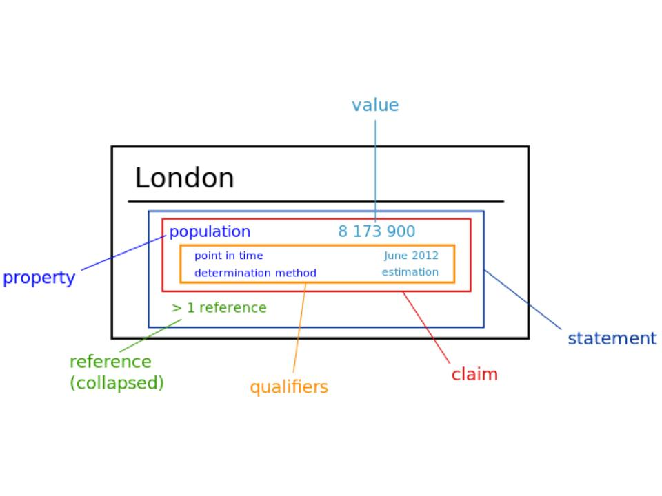
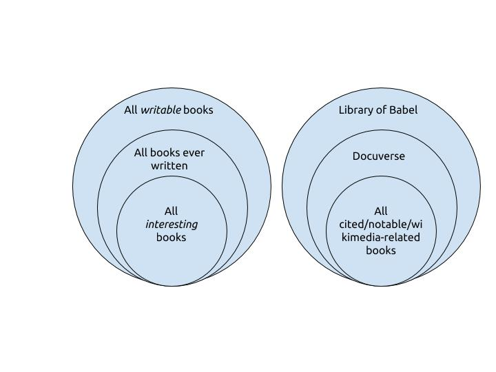
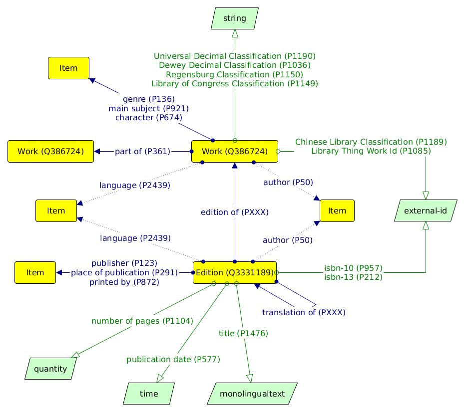

<!doctype html>
<html lang="en">

	<head>
		<meta charset="utf-8">

		<title>Wikidata & libri</title>

		<meta name="description" content="Wikidata and BOOOOKS">
		<meta name="author" content="Andrea Zanni">

		<meta name="apple-mobile-web-app-capable" content="yes" />
		<meta name="apple-mobile-web-app-status-bar-style" content="black-translucent" />

		<meta name="viewport" content="width=device-width, initial-scale=1.0, maximum-scale=1.0, user-scalable=no">

		<link rel="stylesheet" href="reveal.js/css/reveal.css">
		<link rel="stylesheet" href="reveal.js/css/theme/black.css" id="theme">

		<!-- For syntax highlighting -->
		<link rel="stylesheet" href="reveal.js/lib/css/zenburn.css">

		<!-- If the query includes 'print-pdf', use the PDF print sheet -->
		<script>
			document.write( '<link rel="stylesheet" href="reveal.js/css/print/' + ( window.location.search.match( /print-pdf/gi ) ? 'pdf' : 'paper' ) + '.css" type="text/css" media="print">' );
		</script>

		<!--[if lt IE 9]>
		<script src="reveal.js/lib/js/html5shiv.js"></script>
		<![endif]-->
	</head>

	<body>

		<div class="reveal">

            <div class="slides">

                
<section data-markdown data-separator="^\n---\n$" data-separator-vertical="^\n--\n$" data-notes="^Note:">
<script type="text/template">

<!-- .slide: data-background="#bb0000" -->

##Wikidata & libri

[Andrea Zanni](http://aubreymcfato.com)

Utente:Aubrey / [@aubreymcfato](http://twitter.com/aubreymcfato)

---

<!-- .slide: data-background="#0A2A34" -->
i libri sono _complessi_. 

--

<!-- .slide: data-background="#0A2A34" -->
Eredità bibliotecaria: 

* miliardi di libri, articoli, documenti
* tanti schemi di metadati 
* tanti modelli concettuali

--

<!-- .slide: data-background="#0A2A34" -->
Wikidata è _complessa_. 

--

<!-- .slide: data-background="#0A2A34" -->
È composta di elementi (_items_) che hanno coppie proprietà - valore (_property - value_)

--

<!-- .slide: data-background="#ffffff" -->
</img>


--

<!-- .slide: data-background="#0A2A34" -->
Wikidata lavora bene con cose che sono _uniche_.
Come le persone. 

--

<!-- .slide: data-background="#0A2A34" -->
Wikidata è un "super autority control":
è composto di entità uniche e non ambigue, ognuna con le sue proprietà.

--

<!-- .slide: data-background="#0A2A34" -->
Ma i libri non sono "unici": ci sono diversi livelli/punti di vista/interpretazioni di cosa sia
un libro. 

--

<!-- .slide: data-background="#ffffff" -->
</img>

--

<!-- .slide: data-background="#03004d" -->
Ci sono molti _modelli concettuali_ sui libri (FRBR, BIBFRAME, RDA). 
Ci sono anche molti schemi di metadati, e non sempre si riesce passare dall'uno all'altro senza perdere informazione o contesto. 

---

<!-- .slide: data-background="#03004d" -->
_opera_ e _edizione_

--

<!-- .slide: data-background="#03004d" -->
Il libro comunemente detto è una specifica "edizione", in uno specifico linguaggio, con un editore e una data di pubblicazione. Potrebbe essere un ebook o un libro di carta.  

--

<!-- .slide: data-background="#03004d" -->
PDF, epub, copertina rigida, tascabili possono avere diversi ISBN.  
Gli ISBN sono a livello _edizione_. 

--

<!-- .slide: data-background="#03004d" -->
libro come _opera_: il "concetto" di libri.

---

<!-- .slide: data-background="#006633" -->

##I libri su Wikidata

--

<!-- .slide: data-background="#1d9608" -->
Quali libri metteremo su Wikidata?

--

<!-- .slide: data-background="#ffffff" -->

</img>

--

<!-- .slide: data-background="#006633" -->
Storicamente, abbiamo creato pagine di Wikidata a partire da articoli di Wikipedia.  

--

<!-- .slide: data-background="#006633" -->
Se un libro è su Wikipedia, allora è un libro _enciclopedico_. 

--

<!-- .slide: data-background="#006633" -->
enciclopedico > importante > tante edizioni e traduzioni

--

<!-- .slide: data-background="#006633" -->
Entità Wikidata da articoli di Wikipedia sui libri sono, molto spesso, a livello di _opera_. 

--

<!-- .slide: data-background="#006633" -->
Le _citazioni_ di Wikipedia, d'altra parte, fanno riferimento a singole edizioni.
I progetti Wikisource, Commons, Wikiquote fanno tutti riferimenti a specifici libri.
Loro sono a livello di _edizione_.

--

<!-- .slide: data-background="#006633" -->
Ci sono usi diversi, quindi diverse esigenze di _granularità_ dell'informazione.

--

<!-- .slide: data-background="#006633" -->
Come possiamo modellare, in maniera pragmatica e utile, il rapporto fra _opere_ e _edizioni_ su Wikidata?

--

<!-- .slide: data-background="#ffffff" -->

</img>

--

<!-- .slide: data-background="#1d9608" -->
##Grazie

Discussioni (in inglese) su [WikiProject Books](https://www.wikidata.org/wiki/Wikidata_talk:WikiProject_Books)

--

<!-- .slide: data-background="#1d9608" -->
Slides:
##babele.io/slides/wikidatalibri
</script>
</section>


            </div>

		</div>

		<script src="reveal.js/lib/js/head.min.js"></script>
		<script src="reveal.js/js/reveal.js"></script>

		<script>

			// Full list of configuration options available here:
			// https://github.com/hakimel/reveal.js#configuration
			Reveal.initialize({
				controls: true,
				progress: true,
				history: true,
				center: true,

				theme: Reveal.getQueryHash().theme, // available themes are in /css/theme
				transition: 'default', // default/cube/page/concave/zoom/linear/fade/none

                

				// Optional libraries used to extend on reveal.js
				dependencies: [
					{ src: 'reveal.js/lib/js/classList.js', condition: function() { return !document.body.classList; } },
					{ src: 'reveal.js/plugin/markdown/marked.js', condition: function() { return !!document.querySelector( '[data-markdown]' ); } },
					{ src: 'reveal.js/plugin/markdown/markdown.js', condition: function() { return !!document.querySelector( '[data-markdown]' ); } },
					{ src: 'reveal.js/plugin/highlight/highlight.js', async: true, callback: function() { hljs.initHighlightingOnLoad(); } },
					{ src: 'reveal.js/plugin/zoom-js/zoom.js', async: true, condition: function() { return !!document.body.classList; } },
                    
					{ src: 'reveal.js/plugin/notes/notes.js', async: true, condition: function() { return !!document.body.classList; } }
                    
                    
				]
			});

		</script>

	</body>
</html>
